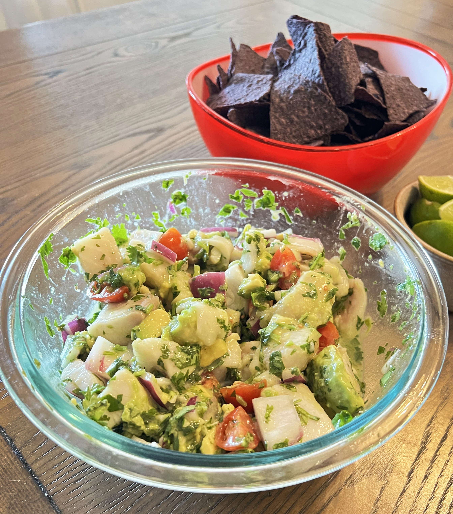

Mexican Tilapia Ceviche
Ceviche is originally a Peruvian dish. Over time latin countries adopted
the meal as well! The first time I had ceviche was in a mexican
restaurant so that seems to be the style I gravitate towards. You use
raw fish and marinate it in lemon or lime juice until the proteins in
the fish react and turn white. It's pretty cool! This ceviche is a
delicious fresh meal to enjoy on a summer night!

INGREDIENTS
All of it!
-
1 lb firm white fish, chopped into bite-size pieces. Tilapia is my
favorite.
- 1 garlic clove, crushed
- 3/4 cup lime juice (about 8-10 limes)
- 1/4 cup extra virgin olive oil
- 3/4 cup chopped fresh cilantro, divided
- 1/2 cup chopped red onion
- 1/4 tsp salt
- 1/8 tsp ground black pepper
- 1 large tomato, diced
- 1 avocado, chopped
INSTRUCTIONS
-
Chop and combine white fish, garlic, lime juice, extra virgin
oliveoil, 1/2 cup cilantro, red onion, salt and pepper in a large
bowl.
-
In a seperate bowl, press fish into the lime juice mixture so it is
submerged. Cover bowl and refidgerate at least 4 hours to overnight.
The fish should turn white.
- When ready to serve, combine both bowls
-
Purple corn chips are my favorite thing to scoop up this delicious
ceviche with!